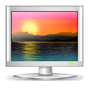

⟳
This extension works only on the Chromebooks and other ChromeOS devices. Doesn't work on Windows, Mac or Linux.
It sets Bing's "Image of the day" as the desktop wallpaper on Chromebooks. Checks periodically for new wallpapers in background.